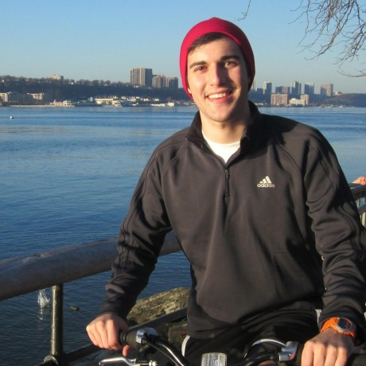

I graduated from Columbia College in May 2014, majoring in computer science. Not your typical techie, I can talk just as much about art and literature as I can about code, which is good because Columbia's curriculum gave me a healthy dose of both.
I have always been passionate about bridging gaps.
My "aha!" moment was traveling to the Columbia Global Center in Kenya and seeing how community health workers use mobile software to improve healthcare delivery and outcomes. My drive is to bridge the gap between emerging science and the everyday people who need it.